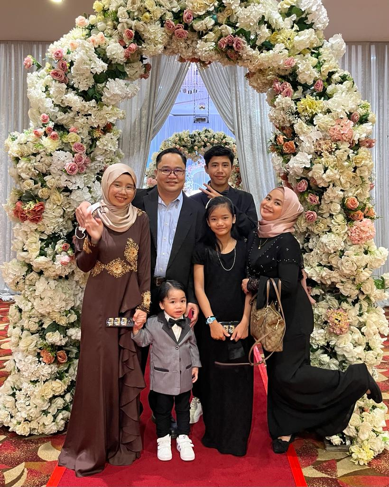

ALLY'S BLOG
Home
Biodata
Experience
Education
Skills
Family
Gallery

My Family.
Family is the precious things in a person's life, your family values and traditions are your first and valuable asset. I have a very close-knitted family, I love all my family members as and how they are.
My mother works as an HR manager and my father works as a medical product specialist. I am the oldest daughter in the family. I have 2 brothers and one sister.My 18 year old brother named is Danish and the baby is Rayyan. My sister name is Marissa. Our family lived in a double-terrace house at Samariang Aman. We always spend our time together daily after dinner.